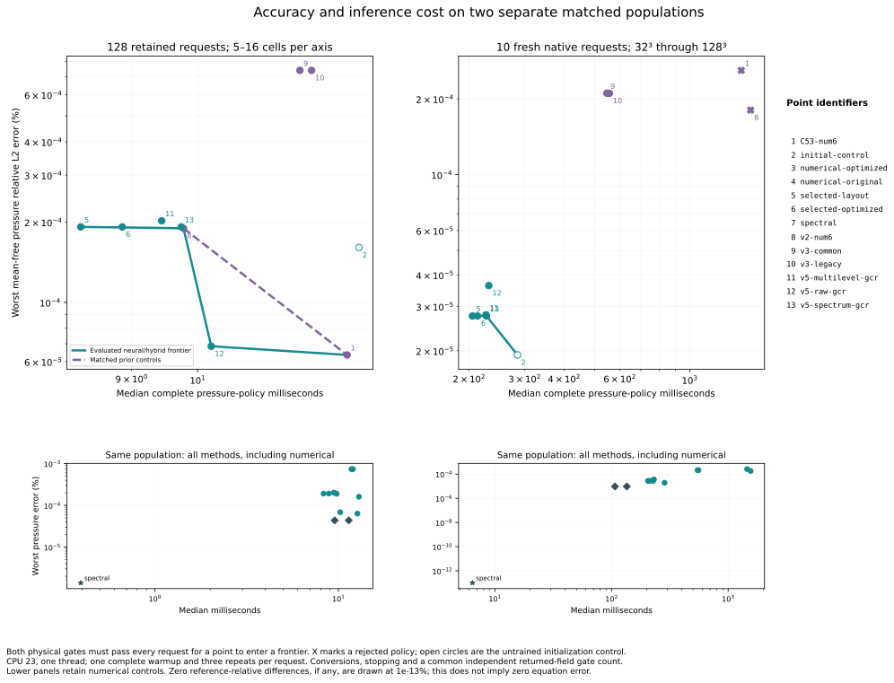
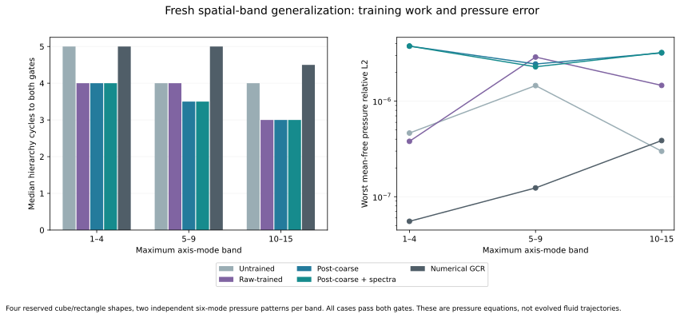
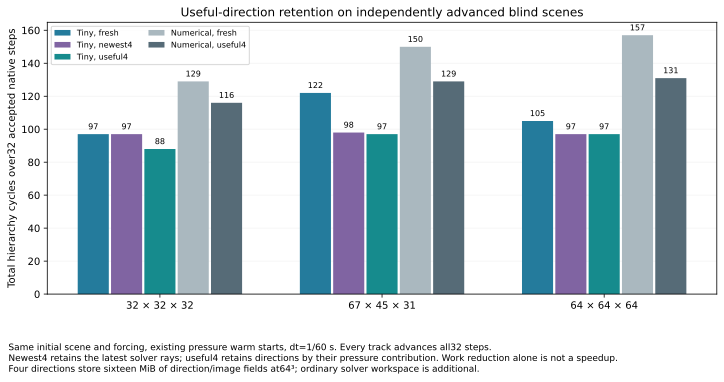
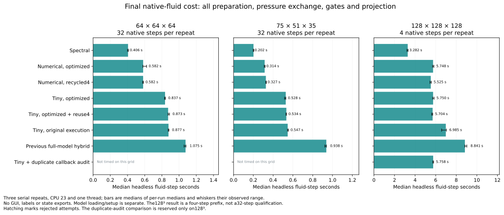
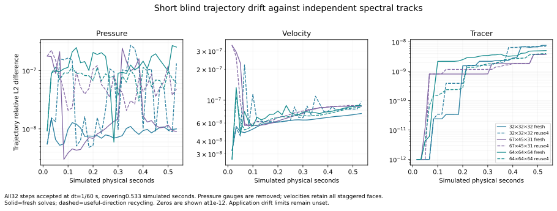

All four requested explorations are complete and audited. Updated 2026-10-19T07:25:48.637576+00:00.
On 64×64×64 cells, the optimized tiny fresh-solve policy takes 0.837 seconds per native step versus 1.075 for the previous full-model hybrid (22.2% lower in this matched test). On 75×51×35 cells, the optimized tiny fresh-solve policy takes 0.528 seconds per native step versus 0.938 for the previous full-model hybrid (43.7% lower in this matched test). On 128×128×128 cells, the optimized tiny fresh-solve policy takes 5.750 seconds per native step versus 8.841 for the previous full-model hybrid (35.0% lower in this matched test).
The new local model has 648 parameters versus 371,214 in the prior full-model hybrid. Post-coarse training reduces median hierarchy work on the 28 new development requests from four cycles to three. Every blinded control also passes, and the untrained tiny control remains visible. Parameter count and work reductions are separate from measured time gains. Recycling saves work but its runtime benefit varies; retained-space projection and maintenance count in every native timing.
Fourteen frozen operating points, including numerical and untrained controls, each pass the same ten new native requests and twenty-four new spatial patterns. Five native forcing scenes and twelve spatial-pattern parents were reserved before fitting; none entered training. Every tensor input has the same population hash across all policies. This establishes coverage on the pilot population. Because the controls also pass, improvements must be assessed through correction work, pressure error and total time.
| Policy | Native gates | Spatial gates | Native median cycles | Spatial median cycles | Worst pressure rel. L2 |
|---|---|---|---|---|---|
| numerical-gcr | 10/10 | 24/24 | 5.0 | 5.0 | 3.87e-07 |
| numerical-optimized | 10/10 | 24/24 | 5.0 | 5.0 | 3.87e-07 |
| numerical-recycled | 10/10 | 24/24 | 5.0 | 5.0 | 3.87e-07 |
| selected-layout | 10/10 | 24/24 | 4.0 | 3.0 | 3.76e-06 |
| selected-optimized | 10/10 | 24/24 | 4.0 | 3.0 | 3.76e-06 |
| selected-recycled | 10/10 | 24/24 | 4.0 | 3.0 | 3.76e-06 |
| selected-tail4 | 10/10 | 24/24 | 4.0 | 3.0 | 3.76e-06 |
| spectral | 10/10 | 24/24 | 1.0 | 1.0 | 4.87e-15 |
| v3-native-optimized | 10/10 | 24/24 | 3.0 | 3.0 | 9.98e-05 |
| v3-native-vcycle | 10/10 | 24/24 | 3.0 | 3.0 | 9.98e-05 |
| v5-initial-gcr | 10/10 | 24/24 | 5.0 | 4.0 | 1.45e-06 |
| v5-multilevel-gcr | 10/10 | 24/24 | 4.0 | 3.0 | 3.76e-06 |
| v5-raw-gcr | 10/10 | 24/24 | 4.0 | 4.0 | 2.89e-06 |
| v5-spectrum-gcr | 10/10 | 24/24 | 4.0 | 3.0 | 3.76e-06 |
Three linear 3×3×3 convolutions (1→4→4→1), no learned biases, plus a fixed q/8 skip. All models share the exact 648-parameter initial state, optimizer schedule and 1,600 original small-grid sampling choices. Another 800 updates sample larger tiers. Reported cells are actual optimizer forwards; the spectral view changes larger-parent exposure and does not imply equal total cell work. Coarse conditioning is a frozen CPU preprocessing cycle; inference still pays its full hierarchy cost.
| Arm | State | Parameters | CUDA updates | Optimizer forwards | Forward cells | Fresh CPU artifact parity |
|---|---|---|---|---|---|---|
| v5-raw | completed | 648 | 2400 | 2400 | 612197560 | True |
| v5-multilevel | completed | 648 | 2400 | 2400 | 612197560 | True |
| v5-spectrum | completed | 648 | 2400 | 2400 | 605205500 | True |
The expanded view retains all 34 original parents and adds 12 reserved spatial-band parents. Six seeded Neumann cosine modes define each independent pressure pattern. Mode bands 1–3, 4–7 and 8–12 and cubic/rectangular grids vary spatial content explicitly. Wavelength along a nonconstant axis is 2Nh/k metres. These are exact-operator pressure equations, not evolved fluid trajectories; synthetic frame slots are independent patterns. Same-equation spectral labels are checked against the analytic fields, and every decoded field hash is verified. Encoded fitting data: 207.99 MiB. Native forcing scenes remain a separate independent evaluation.
Every policy sees the same 192 retained requests, ten reserved native cold/warm requests and eighteen reserved wavelength patterns. Both unchanged residual and predicted-divergence gates are evaluated on the actual returned float64 pressure. No failed case is hidden. The initialization control is explicitly untrained and is not counted as a managed fit. These are development comparisons; fresh blind evaluation follows frozen selection.
| Policy | Retained gates | New native gates | New spatial gates | Native median cycles | Spatial median cycles | Worst pressure rel. L2 |
|---|---|---|---|---|---|---|
| numerical-gcr-optimized | 192/192 | 10/10 | 18/18 | 5.0 | 5.0 | 4.81e-07 |
| numerical-gcr | 192/192 | 10/10 | 18/18 | 5.0 | 5.0 | 4.81e-07 |
| numerical-spectral | 192/192 | 10/10 | 18/18 | 1.0 | 1.0 | 1.38e-08 |
| numerical-vcycle | 192/192 | 10/10 | 18/18 | 6.0 | 6.0 | 1.55e-06 |
| v3-native-gcr | 192/192 | 10/10 | 18/18 | 3.0 | 3.0 | 3.24e-05 |
| v3-native-vcycle-optimized | 192/192 | 10/10 | 18/18 | 3.0 | 3.0 | 1.25e-05 |
| v3-native-vcycle | 192/192 | 10/10 | 18/18 | 3.0 | 3.0 | 1.25e-05 |
| v5-initial-gcr | 192/192 | 10/10 | 18/18 | 4.0 | 5.0 | 1.61e-06 |
| v5-multilevel-gcr | 192/192 | 10/10 | 18/18 | 3.5 | 3.0 | 4.54e-06 |
| v5-multilevel-vcycle | 192/192 | 10/10 | 18/18 | 4.0 | 4.0 | 2.43e-06 |
| v5-raw-gcr-layout | 192/192 | 10/10 | 18/18 | 4.0 | 4.0 | 2.02e-06 |
| v5-raw-gcr-optimized | 192/192 | 10/10 | 18/18 | 4.0 | 4.0 | 2.02e-06 |
| v5-raw-gcr | 192/192 | 10/10 | 18/18 | 4.0 | 4.0 | 2.02e-06 |
| v5-raw-vcycle | 192/192 | 10/10 | 18/18 | 4.0 | 4.0 | 1.3e-06 |
| v5-spectrum-gcr | 192/192 | 10/10 | 18/18 | 3.5 | 3.0 | 4.54e-06 |
| v5-spectrum-vcycle | 192/192 | 10/10 | 18/18 | 4.0 | 4.0 | 2.35e-06 |
Two separate populations: 128 retained requests on grids of 5–16 cells per axis, and ten fresh native requests on grids from 32³ through 128³. Each has one whole-population warmup and three independent timed repeats per request. CPU 23, one thread. All network/coarse work, conversions, stopping and a common independent returned-pressure gate count. Loading, model setup and label generation do not. Reuse is disabled for these independent-request measurements. Supplemental C53 and v2 controls with six coarse nodes per axis provide a matched comparison with strong prior frontier points. Rejected points remain visible and are excluded from qualified frontiers.
| Population | Policy | Parameters | Gates passed | Median ms | Worst pressure rel. L2 |
|---|---|---|---|---|---|
| historical128 | C53-num6 | 370016 | 128/128 | 12.691 | 6.36e-07 |
| native-blind | C53-num6 | 370016 | 8/10 | 1456.325 | 2.59e-06 |
| historical128 | initial-control | 648 | 128/128 | 12.933 | 1.61e-06 |
| native-blind | initial-control | 648 | 10/10 | 284.799 | 1.92e-07 |
| historical128 | numerical-optimized | 0 | 128/128 | 9.539 | 4.37e-07 |
| native-blind | numerical-optimized | 0 | 10/10 | 107.078 | 9.46e-08 |
| historical128 | numerical-original | 0 | 128/128 | 11.378 | 4.37e-07 |
| native-blind | numerical-original | 0 | 10/10 | 135.180 | 9.46e-08 |
| historical128 | selected-layout | 648 | 128/128 | 8.300 | 1.92e-06 |
| native-blind | selected-layout | 648 | 10/10 | 205.038 | 2.75e-07 |
| historical128 | selected-optimized | 648 | 128/128 | 8.867 | 1.92e-06 |
| native-blind | selected-optimized | 648 | 10/10 | 212.744 | 2.75e-07 |
| historical128 | spectral | 0 | 128/128 | 0.394 | 1.38e-08 |
| native-blind | spectral | 0 | 10/10 | 6.409 | 1.62e-16 |
| historical128 | v2-num6 | 370016 | 128/128 | 9.776 | 1.9e-06 |
| native-blind | v2-num6 | 370016 | 8/10 | 1558.899 | 1.8e-06 |
| historical128 | v3-common | 371214 | 128/128 | 11.770 | 7.4e-06 |
| native-blind | v3-common | 371214 | 10/10 | 546.554 | 2.1e-06 |
| historical128 | v3-legacy | 371214 | 128/128 | 11.992 | 7.4e-06 |
| native-blind | v3-legacy | 371214 | 10/10 | 556.690 | 2.1e-06 |
| historical128 | v5-multilevel-gcr | 648 | 128/128 | 9.443 | 2.02e-06 |
| native-blind | v5-multilevel-gcr | 648 | 10/10 | 226.272 | 2.78e-07 |
| historical128 | v5-raw-gcr | 648 | 128/128 | 10.219 | 6.85e-07 |
| native-blind | v5-raw-gcr | 648 | 10/10 | 230.943 | 3.63e-07 |
| historical128 | v5-spectrum-gcr | 648 | 128/128 | 9.742 | 1.92e-06 |
| native-blind | v5-spectrum-gcr | 648 | 10/10 | 227.047 | 2.75e-07 |
Matched blind-scene prefixes, three balanced-order serial repeats per method. The 64³ and rectangular episodes advance 32 steps; the 128³ episode is a bounded four-step comparison. Statistics are medians of per-run frame medians, with the observed range. Native preparation, RHS assembly, binary exchange, pressure policy, host gates and projection count. GUI, loading, teacher labels and state exports do not. The original v4 full-model hybrid uses its unchanged adapter. A rejected episode is an attempted cost and cannot establish a usable speedup.
| Grid cells | Steps/repeat | Method | Completed repeats | Median seconds/step | Run range |
|---|---|---|---|---|---|
| 64×64×64 | 32 | legacy-v3 | 3/3 | 1.0751 | 1.0586–1.0802 |
| 64×64×64 | 32 | numerical-optimized | 3/3 | 0.5821 | 0.5792–0.6217 |
| 64×64×64 | 32 | numerical-recycled | 3/3 | 0.5818 | 0.5763–0.5860 |
| 64×64×64 | 32 | selected-optimized | 3/3 | 0.8366 | 0.8316–0.8401 |
| 64×64×64 | 32 | selected-original | 3/3 | 0.8772 | 0.8732–0.8824 |
| 64×64×64 | 32 | selected-recycled | 3/3 | 0.8726 | 0.8717–0.8878 |
| 64×64×64 | 32 | spectral | 3/3 | 0.4064 | 0.4005–0.4110 |
| 75×51×35 | 32 | legacy-v3 | 3/3 | 0.9377 | 0.9230–0.9384 |
| 75×51×35 | 32 | numerical-optimized | 3/3 | 0.3145 | 0.3104–0.3196 |
| 75×51×35 | 32 | numerical-recycled | 3/3 | 0.3269 | 0.3266–0.3313 |
| 75×51×35 | 32 | selected-optimized | 3/3 | 0.5277 | 0.5159–0.5286 |
| 75×51×35 | 32 | selected-original | 3/3 | 0.5473 | 0.5456–0.5540 |
| 75×51×35 | 32 | selected-recycled | 3/3 | 0.5339 | 0.5310–0.5344 |
| 75×51×35 | 32 | spectral | 3/3 | 0.2017 | 0.1986–0.2057 |
| 128×128×128 | 4 | legacy-v3 | 3/3 | 8.8408 | 8.8369–9.0284 |
| 128×128×128 | 4 | numerical-optimized | 3/3 | 5.7476 | 5.7017–5.8257 |
| 128×128×128 | 4 | numerical-recycled | 3/3 | 5.5252 | 5.4463–5.5810 |
| 128×128×128 | 4 | selected-duplicate-audit | 3/3 | 5.7583 | 5.7207–5.8013 |
| 128×128×128 | 4 | selected-optimized | 3/3 | 5.7505 | 5.7057–5.8491 |
| 128×128×128 | 4 | selected-original | 3/3 | 6.9854 | 6.5790–7.0422 |
| 128×128×128 | 4 | selected-recycled | 3/3 | 5.7044 | 5.6165–5.7130 |
| 128×128×128 | 4 | spectral | 3/3 | 3.2823 | 3.2068–3.3208 |
Median instrumented milliseconds over final fresh optimized native callbacks. Hierarchy, local correction and outer operator columns are components inside the method column; they must not be added to it again. The local correction includes feature preparation and reconstruction. The remaining method work includes GCR orthogonalization, validation and stopping. Input reads, RHS assembly and output sends occur outside the method but inside native pressure waiting time. The separate 128³ duplicate-audit variant measures an additional client residual diagnostic while both solver and native gates remain enabled.
| Grid cells | Input read ms | RHS assembly ms | Method ms | Output send ms | Hierarchy ms | Local correction ms | Outer operator ms |
|---|---|---|---|---|---|---|---|
| 64×64×64 | 1.54 | 1.96 | 445.02 | 4.07 | 78.12 | 334.50 | 14.51 |
| 75×51×35 | 0.82 | 1.02 | 323.58 | 3.54 | 71.40 | 230.85 | 7.89 |
| 128×128×128 | 10.92 | 20.48 | 2706.98 | 10.38 | 1116.68 | 1068.58 | 252.69 |
Each episode starts cold with empty direction storage. The GCR basis is bounded at zero, two or four directions and commits only after the native host accepts and advances the step. Pressure warm starts remain enabled for every method. Reference and candidate trajectories advance independently with the same scene and dt = 1/60 s. A 32-step episode covers 0.533 simulated seconds; it does not establish an application accuracy horizon.
| Episode | Outcome | Advanced | Requested | Hierarchy cycles | CNN calls | Peak stored basis bytes |
|---|---|---|---|---|---|---|
| v5-rollout-development-00-numerical-fresh | completed | 32 | 32 | 129 | 0 | 0 |
| v5-rollout-development-00-numerical-recycle4 | completed | 32 | 32 | 129 | 0 | 2097152 |
| v5-rollout-development-00-spectral | completed | 32 | 32 | 32 | 0 | 0 |
| v5-rollout-development-00-tiny-recycle0 | completed | 32 | 32 | 97 | 97 | 0 |
| v5-rollout-development-00-tiny-recycle2 | completed | 32 | 32 | 96 | 96 | 1048576 |
| v5-rollout-development-00-tiny-recycle4 | completed | 32 | 32 | 87 | 87 | 2097152 |
| v5-rollout-development-00-tiny-recycle4-tail | completed | 32 | 32 | 96 | 96 | 2097152 |
| v5-rollout-development-01-numerical-fresh | completed | 32 | 32 | 129 | 0 | 0 |
| v5-rollout-development-01-numerical-recycle4 | completed | 32 | 32 | 129 | 0 | 4868288 |
| v5-rollout-development-01-spectral | completed | 32 | 32 | 32 | 0 | 0 |
| v5-rollout-development-01-tiny-recycle0 | completed | 32 | 32 | 100 | 100 | 0 |
| v5-rollout-development-01-tiny-recycle2 | completed | 32 | 32 | 97 | 97 | 2434144 |
| v5-rollout-development-01-tiny-recycle4 | completed | 32 | 32 | 96 | 96 | 4868288 |
| v5-rollout-development-01-tiny-recycle4-tail | completed | 32 | 32 | 97 | 97 | 4868288 |
| v5-rollout-development-02-numerical-fresh | completed | 32 | 32 | 129 | 0 | 0 |
| v5-rollout-development-02-numerical-recycle4 | completed | 32 | 32 | 129 | 0 | 16777216 |
| v5-rollout-development-02-spectral | completed | 32 | 32 | 32 | 0 | 0 |
| v5-rollout-development-02-tiny-recycle0 | completed | 32 | 32 | 97 | 97 | 0 |
| v5-rollout-development-02-tiny-recycle2 | completed | 32 | 32 | 97 | 97 | 8388608 |
| v5-rollout-development-02-tiny-recycle4 | completed | 32 | 32 | 92 | 92 | 16777216 |
| v5-rollout-development-02-tiny-recycle4-tail | completed | 32 | 32 | 97 | 97 | 16777216 |
Every track advances all 32 requested steps. The existing pressure warm start is shared by every method. The useful-direction strategy ranks stored directions by their mean-free pressure contribution in the current accepted solve, avoiding wholesale replacement by new residual-complement directions. Across the three blind scenes, the tiny model uses 324 hierarchy cycles with fresh solves and 282 with useful-direction reuse (13.0% fewer). Numerical controls use 436 and 376 cycles respectively (13.8% fewer). These are work reductions; basis projection, scoring, copying and storage can offset them in runtime. Four stored direction/image pairs occupy 16 MiB at 64³ and 128 MiB at 128³, in addition to ordinary solver workspace.
| Grid cells | Tiny fresh | Tiny newest4 | Tiny useful4 | Numerical fresh | Numerical useful4 |
|---|---|---|---|---|---|
| 32×32×32 | 97 | 97 | 88 | 129 | 116 |
| 67×45×31 | 122 | 98 | 97 | 150 | 129 |
| 64×64×64 | 105 | 97 | 97 | 157 | 131 |
Full pressure, staggered velocity and tracer fields are independently advanced against the spectral reference, then decoded and hash-verified. All comparisons cover 32 accepted steps, or 0.533 simulated seconds. Pressure gauges are removed. Velocity and tracer differences remain comparable between fresh and recycled solves in this pilot; no general drift improvement or application acceptance threshold is established.
| Track | Accepted steps | Simulated seconds | Final pressure rel. L2 | Final velocity rel. L2 | Final tracer rel. L2 |
|---|---|---|---|---|---|
| v5-rollout-blind-00-tiny-fresh | 32 | 0.5333333333333333 | 1e-08 | 7.42e-08 | 7.69e-09 |
| v5-rollout-blind-00-tiny-recycled | 32 | 0.5333333333333333 | 1.33e-07 | 9.69e-08 | 7.22e-09 |
| v5-rollout-blind-01-tiny-fresh | 32 | 0.5333333333333333 | 9.03e-09 | 8.71e-08 | 3.81e-09 |
| v5-rollout-blind-01-tiny-recycled | 32 | 0.5333333333333333 | 4.8e-08 | 8.85e-08 | 3.72e-09 |
| v5-rollout-blind-02-tiny-fresh | 32 | 0.5333333333333333 | 2.52e-07 | 8.83e-08 | 5.08e-09 |
| v5-rollout-blind-02-tiny-recycled | 32 | 0.5333333333333333 | 6.01e-08 | 8.5e-08 | 4.01e-09 |
The instrumented 128³ hierarchy cycle spends roughly two-thirds of its time in operator actions. The optimization uses the identical fine edge stencil directly and avoids applying the operator to an initially zero field at each level. Restriction, prolongation and exact Galerkin coarse operators are retained. Independent cube, odd-grid and rectangular tests check complete-cycle parity. Native callback instrumentation separately records input reads, RHS assembly, output sends and optional redundant residual diagnostics. Independent native acceptance remains active throughout.
Selected v5-spectrum using development gate coverage, retained coverage and correction work. No further fits are allowed after this selection. Reuse capacity and execution are qualified before new blind capture.
Selected research artifacts: CPU weights · Exact model/source entry · Captured training Project. The models start from the same seeded tiny network, with no C53 weight reuse or distillation. A nonoperative inherited controller label in the raw arm is disclosed in its metadata clarification; checkpoint-000 proves the actual shared initialization.
The frozen configuration uses four useful directions, the direct fine-grid stencil and channels-last local inference. All blinded variants remain reported. The wavelength-augmented fit won a small pressure-error tie-break against the native-only post-coarse fit; both had the same development coverage and median work. This does not establish a clear additional benefit from wavelength augmentation in this recipe.
A deliberately large-base equation exposed an increment-versus-returned-pressure precision error in the initial dispatcher. The regression fails for the original wrapper and passes for the corrected dispatcher, which recomputes RHS minus the operator applied to the actual rounded pressure during convergence and final qualification. The original preliminary evaluations are retained and excluded from the final matrix. Native Rust gates were unchanged and no rejected native step advanced. Training fits are unaffected.
Correction to prior v4 report prose: the multilevel/CNN hybrid retained all 156 prior requests, with 174/174 total development qualifications. Its statement that one retained request failed was a table-reading error. Prior raw evidence and publication hashes are preserved. Exact correction and source.





Final evidence and fresh Run custody audit · Four-objective completion audit · Figure provenance
All four requested explorations are complete and audited. No model promotion or application drift acceptance is claimed. Training stops at 128³; production 256³/512³/1024³ deployment is outside this series.
Machine-readable evidence · Four required tracks · Original requested scope · Preserved prior report